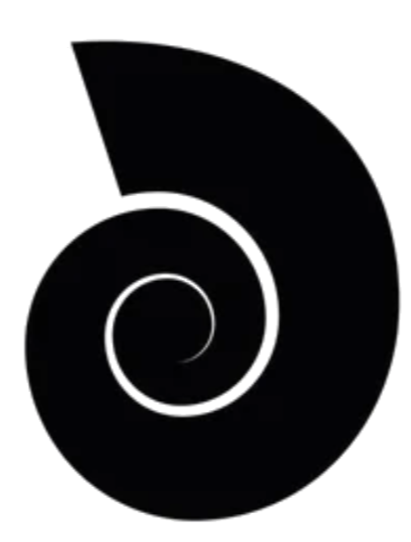
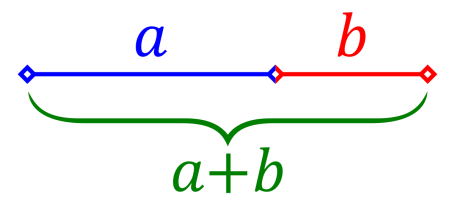

Золотий перетин
в web дизайні
Мета роботи: навчитися використовувати золоту пропорцію в web дизайні.

Числа Фібоначчі
Біографія Фібоначчі
Італійський купець Леонардо з Пізи більш відомий під псевдонімом Фібоначчі народився
1170року ,а помер близько 1250року.
Про походження його псевдоніму є багато версій.Перша версія це що його батько Гільєрмо
мав прізвисько Боначчі ("Добромисний"), а
Леонардо прозивався Filius Bonacci ("син добромислого").За іншою, Фібоначчі походить від
фрази Figlio Buono Nato Ci, що
в перекладі з італійської "хороший син народився".Леонардо здобував свої знання
мандруючи з батьком.Його батько часто бував у
Алжирі і Леонардо вивчав там математику у арабських вчителів. Пізніше побував в
Єгипті,Сирії,Візантії,Сицилії де також навчався.
Про числа Фібоначчі
У "Книзі абака" це книга яку написав Фібоначчі в ній з'являється згадка про
послідомність Фібоначчі.Ця послідомність є рикуртною і полягає в тому, що
кожне наступне число дорівнює сумі попередніх і починається з 0 і 1. 0, 1, 1, 2, 3, 5,
8, 13, 21, ...
Числа Люка
Біографія Люка
Франсуа Едуард Анатоль Люка французький матиматик,професор.Народився 4 квітня 1842
року
помер 8 жовтня 1891.Працював в
ліцеї Луї-ле-Гран в Парижі.Про його життя відомо мало.
Цікаві факти про матиматичну біографію Люка:
-У 1878році Люка дав критерій для визначиння того, простим або складним є число
Марсенна.Воно опинилося простим;
-Першим звернув увагу і описав властивості чисел, згодом названими його ім'ям - чисел
Люка;
-Описав властивості послідомностей, що задовольняють однорідним лінійним рекуртним
рівнянням другого порядку, окремим
випадком яких є числа Фібоначчі і числа Люка.Такі послідомності тепер називають
послідомності Люка;
-Придумав ряд цікавих завдання , в тому числі головоломку Ханойська вежа;
-Придумав Теорему Люка яка каже про залишок від ділення біномальних коефіцієнтів на
прості числа вперше отримане Люка в 1878році.
-Люка вважав що за допомогою буть яких машин додавання зручніше проводити у двійковій
системі, ніж в десятковій.
Про числа Люка
Його числа це рекуртна функція в якій сума попередніх чисел дорівнює слідучому числу
починаються вона з 2 і 1.
2, 1, 3, 4, 7, 11.
Золотий перетин
Розповідь про золотий перетин
Послідомності Фібаначчі та Люка обєднує одна властивість.Як і в числах Фібаначчі так і в
Люка якщо будь-який член цих послідомностей розділити
на попередній йому наприклад 13:8 то ми отримаємо число фі яке приблизно дорівнює 1.618.
Відношення до наступного числа дорівнює
0.618 яке є прямо пропорційне до 1.618, а якщо ділити числа через одне то отримаємо
2.618 і 0.382 , які теж є пропорціями.Це дуже тісно
пов'язане зі золотим перерізом.В нашому житті ми спостерігаємо за багатьма явищами та
предметами.Якісь нам подобаються якісь не, але вони складають певну
гармонію.І саме Золотий переріз є найвищий прояв цієї гармонії в науці, житті та
местецтві. Вінь зустрічається в багатоьх сферах ,томущо людина впершу чергу спиймає все
на
вигляд і тому з двох логотипів вона вибире той який має ідеальну гармонію.
